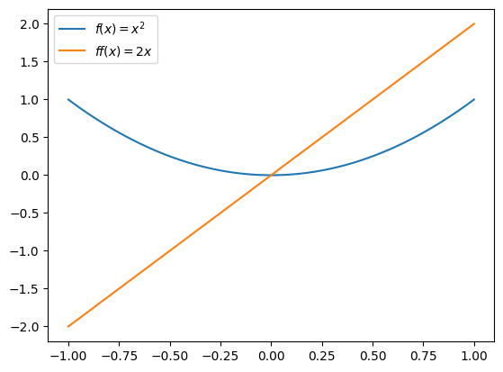
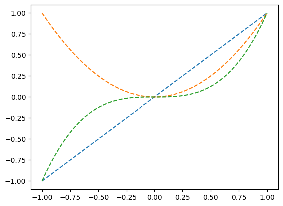

#{{<video https://youtu.be/playlist?list=PLQqh36zP38-wMY2MS-ZGKFXqVgbTeAzNQ&si=iojT6Aif9fwoOyUN >}}13wk-2: 클래스 (3)
1. 강의영상
2. Imports
import numpy as np
import matplotlib.pyplot as plt
import pandas as pd3. 오브젝트
“파이썬의 모든 것은 오브젝트이다. 값도, 함수도, 인스턴스도, 클래스도 오브젝트이다.” <– 살짝 과장이지만 일단 명언처럼 외우세여
A. 오브젝트
오브젝트 특징:
id(오브젝트)가 동작함
a = 1
id(a)139673054200048f = lambda x: x
id(f)139671492666720a = RPS(['가위'])
id(a)139671501410208id(RPS)48527600id(list)7629888id(range)7611936id(len)139673054827024id(id)139673054826544- 모듈
id(np)139672692083184id(pd)139672945002192B. 오브젝트가 아님
- 구문
id(lambda)SyntaxError: invalid syntax (3978401784.py, line 1)id(def)SyntaxError: invalid syntax (839197359.py, line 1)- 제어구조
id(for)SyntaxError: invalid syntax (1172573452.py, line 1)id(if)SyntaxError: invalid syntax (2846441332.py, line 1)id(while)SyntaxError: invalid syntax (2390637289.py, line 1)4. __call__ \((\star\star\star)\)
A. 함수도 인스턴스다
- 다시 함수를 공부해봅시다.
def f(x):
return x+1f(3)4- 함수의 사용방법?
- 입력으로 변수 x를 받음 = 입력으로 인스턴스 x를 받음.
- 출력으로 변수 x+1을 리턴 = 출력으로 인스턴스 x+1을 리턴.
- 사실1: 파이썬에서 함수는 인스턴스를 입력으로 받고 인스턴스를 출력한다.
- 함수의 자료형?
?fSignature: f(x) Docstring: <no docstring> File: /tmp/ipykernel_789918/1304018138.py Type: function
- type이 function이다.
- f는 function class의 instance이다.
- 결국 f 역시 하나의 오브젝트에 불과하다.
- 사실2: 함수도 결국 인스턴스이다. -> 함수의 입력으로 함수를 쓸 수도 있고 함수의 출력으로 함수가 나올 수도 있다.
B. 함수사용 고급
(예제1) 숫자입력, 함수출력
def f(a):
def _f(x):
return (x-a)**2
return _fg=f(10) # g(x)=(x-10)**2g(2) # (2-10)**2 = 6464- 해석: \(f(a)\)는 \(a\)를 입력으로 받고 \(g(x)=(x-a)^2\)라는 함수를 리턴해주는 함수
아니 무슨 함수를 “값처럼” 취급해서 리턴하네??
(예제1)의 다른표현: 익명함수 lambda
def f(x):
return x+1f= lambda x: x+1표현1
def f(a):
_f = lambda x: (x-a)**2 ### lambda x: (x-a)**2 가 실행되는 순간 함수오브젝트가 만들어지고 그것이 _f 로 저장됨
return _fg=f(10) # g(x)=(x-10)**2g(3) # (3-10)**2 = 4949표현2
def f(a):
return lambda x: (x-a)**2g=f(10) # g(x)=(x-10)**2g(3) # (3-10)**2 = 4949(예제2) 함수입력, 숫자출력
f = lambda x: x**2def d(f,x): # 함수를 입력을 받는 함수를 정의
h=0.000000000001
return (f(x+h)-f(x))/hd(f,4) # f'(4) = 2*4 = 88.000711204658728(예제3) 함수입력, 함수출력
def f(x):
return x**2def derivate(f):
# step1: 함수오브젝트 f는 입력으로 받은상태
# step2: 함수오브젝트 f를 이용하여 df라는 함수를 정의
def df(x):
h=0.000000000001
return (f(x+h)-f(x))/h
# step3: 정의된 df를 리턴
return dfff = derivate(f)ff(7) # f의 도함수14.004797321831575원래함수 시각화
x = np.linspace(-1,1,100)
plt.plot(x,f(x))
도함수 시각화
x = np.linspace(-1,1,100)
plt.plot(x,f(x),label=r'$f(x)=x^2$')
plt.plot(x,ff(x),label=r'$ff(x)=2x$')
plt.legend()
(예제3)의 다른표현
def f(x):
return x**2def derivate(f):
h=0.000000000001
return lambda x: (f(x+h)-f(x))/hff = derivate(f)ff(10)20.00888343900442x = np.linspace(-1,1,100)
plt.plot(x,f(x),label=r'$f(x)=x^2$')
plt.plot(x,ff(x),label=r'$ff(x)=2x$')
plt.legend()
(예제4) 함수들의 리스트
flst = [lambda x: x, lambda x: x**2, lambda x: x**3]
flst[<function __main__.<lambda>(x)>,
<function __main__.<lambda>(x)>,
<function __main__.<lambda>(x)>]for f in flst:
print(f(2))2
4
8for f in flst:
plt.plot(x,f(x),'--')
위의코드는 아래와 같음
plt.plot(x,(lambda x: x)(x),'--')
plt.plot(x,(lambda x: x**2)(x),'--')
plt.plot(x,(lambda x: x**3)(x),'--')C. 정리
- 지금까지 개념
- 함수: 변수를 입력으로 받아서 변수를 출력하는 개념
- 변수: 어떠한 값을 저장하는 용도로 쓰거나 함수의 입력 혹은 출력으로 사용함
- R과 구별되는 파이썬의 독특한 테크닉 (부제: 파이썬에서 함수를 잘 쓰려면?)
- 변수든 함수이든 둘다 인스턴스임. (즉 어떠한 클래스에서 찍힌 똑같은 오브젝트라는 의미)
- 변수를 함수처럼: 메소드
lst.append(1)은 마치append(lst,1)와 같은 함수로 쓸 수 있음 - 함수를 변수처럼(\(\star\)): 함수자체를 함수의 입력으로 혹은 출력으로 쓸 수도 있음. 함수를 특정 값처럼 생각해서 함수들의 list를 만들 수도 있다.
D. callable object
- 함수 오브젝트의 비밀?
f = lambda x: x+1a=11set(dir(f)) & {'__call__'}{'__call__'}- 함수 오브젝트에는 숨겨진 기능
__call__이 있다.
f.__call__(3) # f(3)4f.__call__(4) # f(4)5- 여기에 우리가 정의한 내용이 있다.
- 함수처럼 쓸 수 없는 인스턴스는 단지 call이 없는 것일 뿐이다.
class Klass:
def __init__(self):
self.name='guebin'a=Klass()a()TypeError: 'Klass' object is not callable- a는 callable이 아니라고 한다.
class Klass2(Klass):
def __call__(self):
print(self.name)b=Klass2()b()guebin- b는 callable object! 즉 숨겨진 메서드로
__call__를 가진 오브젝트! - Klass는 callable object를 만들지 못하지만 Klass2는 callable object를 만든다.
- 클래스로 함수를 만들기 (=함수인스턴스를 찍어내는 클래스 설계)
class AddConstant:
def __init__(self,const):
self.const = const
def __call__(self,x):
return x + self.constf = AddConstant(3) # callable object생성, f.const에는 3이 저장되어있음.f(5) # f.const 와 5를 더하는 기능을 수행, # 즉 f(x) = x+3 을 수행함8f(10)13- 클래스도 그러고 보니까 오브젝트 아니었나?
Student_Ver2?Init signature: Student_Ver2(age=20.0, semester=0) Docstring: <no docstring> Type: type Subclasses:
- 이것도 type 이라는 또 다른 클래스에서 (클래스를 찍는 클래스) 찍힌 오브젝트이구나..
- 클래스 “오브젝트”도 함수 “오브젝트”처럼 Student_Ver2()와 같이 사용하면 인스턴스를 만들었음. -> Student_Ver2.__call__() 은 Student_Ver2()와 같은 역할을 할 것이다.
일반적인 구현에서 “클래스 \(\to\) 인스턴스” 과정
boram = Student_Ver2(age=20.0,semester=0)입학을 축하합니다. 당신의 나이는 20.0이고 현재 학기는 0학기 입니다.boram + '등록' + '휴학' + '휴학'
나이: 21.5
학기: 1
학기: 1
공부를 위해 call을 이용해본 “클래스 \(\to\) 인스턴스” 과정
boram = Student_Ver2.__call__(age=20.0,semester=0) #
# boram = Student_Ver2(age=20.0,semester=0)입학을 축하합니다. 당신의 나이는 20.0이고 현재 학기는 0학기 입니다.boram + '등록' + '휴학' + '휴학'
나이: 21.5
학기: 1
학기: 1
파이썬의 비밀11:
f()와 같이 쓸 수 있는 오브젝트는 단지__call__이 정의되어있는 오브젝트일 뿐이다.
5. __iter__ (\(\star\star\star\star\star\))
A. for문의 복습
- 아래와 같은 예제들을 관찰하여 for문을 복습하자.
(예제1) [1,2,3,4]
for i in [1,2,33,4]:
print(i)1
2
33
4(예제2) (1,2,3,4)
for i in (1,2,33,4):
print(i)1
2
33
4(예제3) ‘1234’
for i in '123asdf':
print(i)1
2
3
a
s
d
f(예제4) 5
for i in 5:
print(i)TypeError: 'int' object is not iterable- 의문1:
for i in ???:
print(i)에서 ??? 자리에 올수 있는 것이 무엇일까?
(예제5) [[1,2,3,4],[3,4,5,6]], pd.DataFrame([[1,2,3,4],[3,4,5,6]])
lst = [[1,2,3,4],[3,4,5,6]]
lst[[1, 2, 3, 4], [3, 4, 5, 6]]for l in lst:
print(l)[1, 2, 3, 4]
[3, 4, 5, 6]for l in np.array(lst):
print(l)[1 2 3 4]
[3 4 5 6]for l in pd.DataFrame(lst):
print(l)0
1
2
3- 데이터프레임인 경우는 colname이 반복
df = pd.DataFrame({'x':[1,2,3],'y':[2,3,4]})
df| x | y | |
|---|---|---|
| 0 | 1 | 2 |
| 1 | 2 | 3 |
| 2 | 3 | 4 |
for d in df:
print(d)x
y- 의문2: for의 출력결과는 어떻게 예측할 수 있을까?
B. for문의 동작원리
- 의문1의 해결: 아래의 ??? 자리에 올 수 있는 것은 dir()하여 __iter__가 있는 object이다.
for i in ???:
print(i)이러한 오브젝트를 iterable object라고 한다.
- 예제1~4 확인
lst = [1,2,3]
set(dir(lst)) & {'__iter__'}{'__iter__'}tpl = 1,2,3
set(dir(tpl)) & {'__iter__'}{'__iter__'}string = '123'
set(dir(string)) & {'__iter__'}{'__iter__'}a = 5
set(dir(a)) & {'__iter__'}set()- __iter__의 역할: iterable object를 iterator로 만들 수 있다!
lst = [1,22,-33]lst_iterator = lst.__iter__()
# lst_iterator = iter(lst)- iterator가 되면 무엇이 좋은가? -> 숨겨진 기능 __next__가 열린다.
set(dir(lst_iterator)) & {'__next__'}{'__next__'}- 그래서 __next__의 기능은? -> 원소를 차례대로 꺼내준다 + 더 이상 꺼낼 원소가 없으면 StopIteration Error를 발생시킨다.
next(lst_iterator)
# lst_iterator.__next__() # 같은코드1next(lst_iterator)
# lst_iterator.__next__() # 같은코드22next(lst_iterator)
# lst_iterator.__next__() # 같은코드-33next(lst_iterator)
# lst_iterator.__next__() # 같은코드StopIteration: - for문의 동작원리
for i in iterable:
...이터레이터생성:
.__iter__()혹은iter()을 이용하여 iterable을 iterator로 만든다.\(i\)생성 및 반복: 1에서 만들어진 iterator에서
.__next__()함수를 호출하고 결과를 \(i\)에 저장한뒤 for문 블락안의 내용 (들여쓰기 된 내용) 을 실행한다. \(\to\) 반복한다.정지:
.__next__()함수를 호출할때 StopIteration Error가 나오면 for문을 멈춘다.
flowchart LR
A[iterable] --> |"__iter__()"| B(iterator)
B --> |"__next__()"| C{stop?}
C --> |NO| D[i] --> E[...] --> B
C --> |YES| F[end]
- 아래의 구조도 잘 돌아갈까?
for i in iterator:
print(i)iterator의 iter가 자기자신을 리턴하도록 하는 트릭을 쓰면 “1.이터레이터생성 2.\(i\)생성 및 반복 3.정지”의 동작원리를 수정하지 않고 for문을 안전하게 돌릴 수 있다.
flowchart LR
A(iterator) --> |"__iter__()"| B(iterator)
B --> |"__next__()"| C{stop?}
C --> |NO| D[i] --> E[...] --> B
C --> |YES| F[end]
- 요약
- iterable object는 숨겨진 기능으로
__iter__를 가진다. - iterator는 숨겨진 기능으로
__iter__와__next__를 가진다. 따라서 정의상 iterator는 그 자체로 iterable object가 된다! - iterator의
__iter__는 자기자신을 리턴한다.
- 의문2의 해결: for의 출력결과는 어떻게 예측할 수 있을까? iterator를 만들어서 .__next__()의 출력값을 확인하면 알 수 있다.
_df_itertor = iter(df)next(_df_itertor)'x'next(_df_itertor)'y'next(_df_itertor)StopIteration: C. 사용자정의 이터레이터
- 내가 이터레이터를 만들어보자.
- 찌를 내는 순간 for문이 멈추도록 하는 이터레이터를 만들자.
class RPS_ITERATOR: # 찌를 내는순간 for문이 멈추도록 하는 이터레이터를 만들자
def __init__(self):
self.candidate = ["묵","찌","빠"]
def __iter__(self):
return self
def __next__(self):
action = np.random.choice(self.candidate)
if action == "찌":
print("찌가 나와서 for문을 멈춥니다")
raise StopIteration
else:
return actiona = RPS_ITERATOR()a.__next__()'빠'a.__next__()'묵'a.__next__()'묵'a.__next__()찌가 나와서 for문을 멈춥니다StopIteration: for i in a:
print(i)빠
묵
묵
빠
빠
찌가 나와서 for문을 멈춥니다D. range()
- 파이썬에서 for문을 처음 배울 때: range(5)를 써라!
for i in range(5):
print(i)0
1
2
3
4- range(5)가 도데체 무엇이길래?
- range(5)의 정체는 그냥 iterable object이다.
set(dir(range(5))) & {'__iter__','__next__'}{'__iter__'}- 그래서 언제든지 iterator로 바꿀 수 있다.
rtor= iter(range(5))
rtor<range_iterator at 0x7f9a8e84f5d0>set(dir(rtor)) & {'__iter__','__next__'}{'__iter__', '__next__'}- for문에서 range(5)가 행동하는 방법?
rtor = iter(range(5))rtor.__next__()0rtor.__next__()1rtor.__next__()2rtor.__next__()3rtor.__next__()4rtor.__next__()StopIteration: E. zip
- 이터레이터의 개념을 알면 for문에 대한 이해도가 대폭 상승한다.
for i,j in zip([1,2,3],'abc'):
print(i,j)1 a
2 b
3 c- zip은 뭐지?
zip([1,2,3],'abc')<zip at 0x7f9a8e7dd5c0>- 어차피 for i in ????: 의 ???? 자리는 iterable object의 자리이다.
set(dir(zip([1,2,3],'abc'))) & {'__iter__','__next__'}{'__iter__', '__next__'}__next__()함수가 있음 \(\to\)zip([1,2,3],'abc')은 그자체로 iterator 였다!
z= zip([1,2,3],'abc')z.__next__()(1, 'a')z.__next__()(2, 'b')z.__next__()(3, 'c')z.__next__()StopIteration: 또다른 이해: 그러고보니까 zip([1,2,3],'abc')은 뭐하는 문법이지?
zip?Init signature: zip(self, /, *args, **kwargs) Docstring: zip(*iterables) --> A zip object yielding tuples until an input is exhausted. >>> list(zip('abcdefg', range(3), range(4))) [('a', 0, 0), ('b', 1, 1), ('c', 2, 2)] The zip object yields n-length tuples, where n is the number of iterables passed as positional arguments to zip(). The i-th element in every tuple comes from the i-th iterable argument to zip(). This continues until the shortest argument is exhausted. Type: type Subclasses:
- 너 클래스였어?
iterator_from_zip = zip.__call__([1,2,3],'abc')for i,j in iterator_from_zip:
print(i,j)1 a
2 b
3 c파이썬의 작은 비밀: zip은 iterator를 찍어내는 클래스이다.
F. enumerate
- zip의 짝궁으로 enumerate가 있음
for i,s in enumerate('abc'):
print(i,s)0 a
1 b
2 c- enumerate('abc')도 문법상 iterable object 아니면 iterator 임.
set(dir(enumerate('abc'))) & {'__iter__', '__next__'}{'__iter__', '__next__'}- iterator 였군
iterator = enumerate('abc')next(iterator)(0, 'a')next(iterator)(1, 'b')next(iterator)(2, 'c')next(iterator)StopIteration: - 참고: enumerate 는 클래스임
enumerate?Init signature: enumerate(iterable, start=0) Docstring: Return an enumerate object. iterable an object supporting iteration The enumerate object yields pairs containing a count (from start, which defaults to zero) and a value yielded by the iterable argument. enumerate is useful for obtaining an indexed list: (0, seq[0]), (1, seq[1]), (2, seq[2]), ... Type: type Subclasses:
파이썬의 작은 비밀: enumerate 역시 iterator를 찍어내는 클래스다.
파이썬의 비밀12: iterator나 iterable object만 for문과 함께 사용할 수 있다.